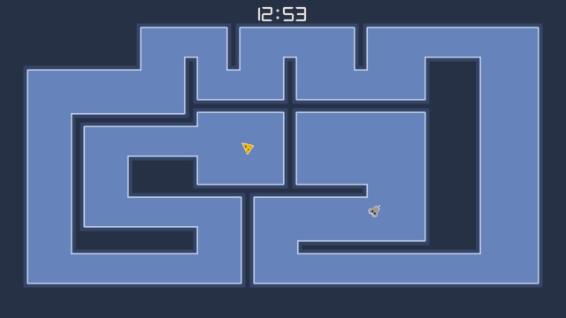
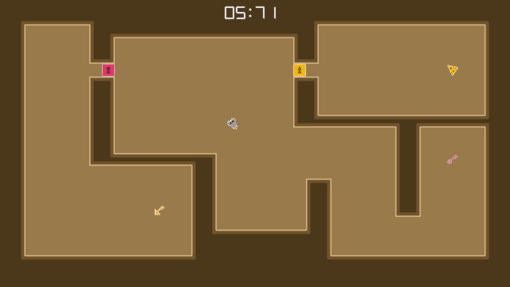
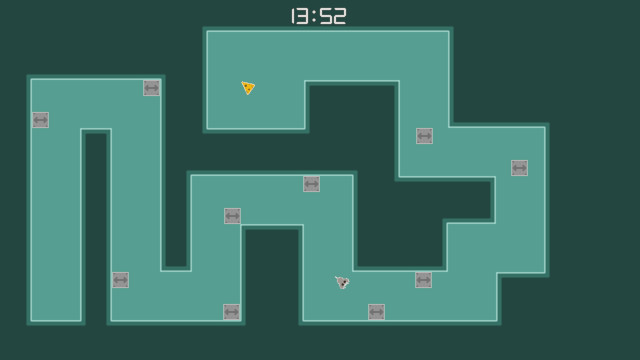

Manic Mouse!
2024
{kind=link}
Manic Mouse! is my next, slightly more complicated C++ game made from scratch after MinSnake. I have always been fascinated by the idea of controlling a character with just the mouse. In the game, the player moves a mouse with the mouse to eat cheese, collecting keys and avoiding obstacles along the way. There is a time limit to pressure the player and try to force them into risky, fast movements. Manic Mouse! was created in C++ using OpenGL, GLEW, and SDL2.
With Manic Mouse! I wanted to create a more formal and complex 2D C++ game, but still keep the scope reasonable at one month of development time. The main technologies I intended to implement were hardware sprite rendering, a basic game loop, basic game state structure, intentional memory management for performance, sound playback, external level data, and configuration via a config file. All of these are included in the final package. I tried to not create a general purpose game engine, but rather only write the code needed for this game. Regardless, I ended up with a game loop, data loader functions, and math functions that could easily be reused and evolved in future projects. There are several collision algorithm functions that I really enjoyed creating. They all efficiently ensure that fast mouse movements do not tunnel through any objects. I also had fun creating the shaders for the spotlight transitions for going in and out of levels, which is probably the most clever bit of design work in the game.
The end package of Manic Mouse! is great for how simple it is behind the scenes. Adding in sound and music really helps give the game weight. This was a return to sound design for me which I dreaded, but I ultimately had fun with it. The sprite work is more focused on function over looks due to the game's unconventional control scheme needing to be more readable. The blob tileset logic is all handled algorithmically, saving massive amounts of time with level design. There are 50 levels in total, designed with Tiled and then converted from JSON to a custom format using a Node.js script. In theory, the game is easily moddable, allowing for the addition of new levels and modified graphics. Getting the mouse sprite to face the direction of the movement was tricky: many small mouse movements end up jittery when getting the vector direction of the integer change in mouse position. I solved this by sampling the last 10 mouse movement directions and averaging them. The end result is smooth and incredibly satisfying.
The source code for Manic Mouse can be found on GitHub here: Manic Mouse Source Code Repository
 {kind=link}
{kind=link}